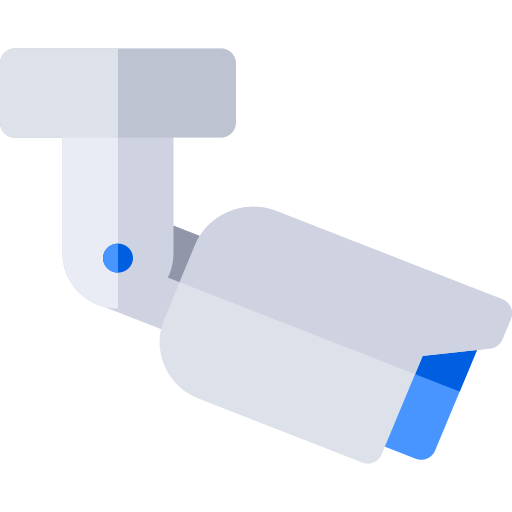

fotomonitor.uaДослідження зовнішньої реклами
 Моніторинг носіїїв зовнішньої реклами
Моніторинг носіїїв зовнішньої реклами
 Фотоаудит під замовлення
Фотоаудит під замовлення
Фотозвіти
Дослідження руху транспорту
 Підключення до автоматизованої системи вимірювання трафику
Оцінка єфективності носіїв зовнішньої реклами
Надання рекомендацій з розміщенню рекламних об'ектів при проектуванні